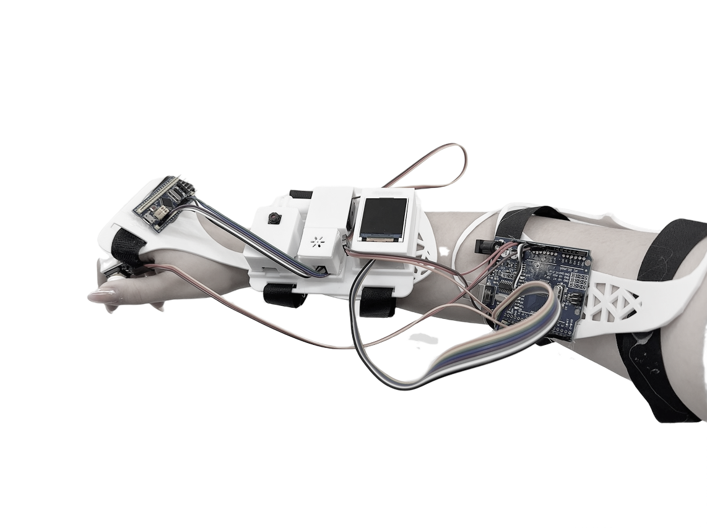
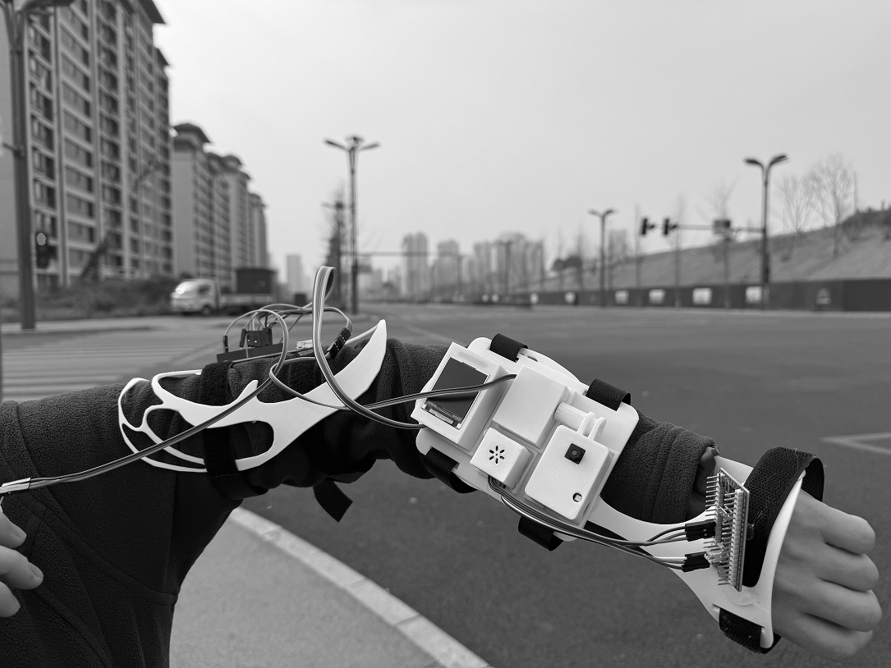
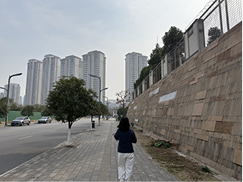
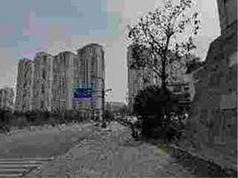
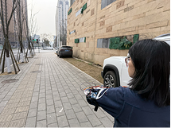
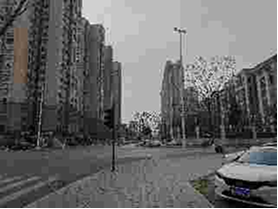
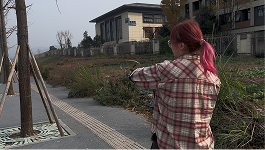
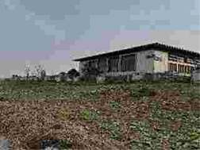

Multimodal Perception System for Detecting Pseudo-Urbanization Phenomena.
A ghost city photographed at noon looks indistinguishable from a thriving metropolis. But the silence speaks. Urban Mirage reveals that true urban vitality cannot be captured by a single sense — by fusing acoustic signatures with visual scenes, we reveal not what a city looks like, but what it feels like to inhabit.
In China's rapid urbanization, a paradox has emerged: large-scale districts appear architecturally complete, yet remain socially quiet. The most telling signals of emptiness are often subtle, ambient, and multisensory — invisible to conventional visual surveillance.
"How is emptiness perceived and detected?"
— Research Question
Urban vitality leaves sensory traces — acoustic signatures, micro-events, foot rhythm. These signals can be read computationally when visual cues are deceptive.
We no longer rely solely on static demographics, but instead use mobile data — night-time footfall, transport journeys, food delivery routes — to interpret cities.
"What does a city look like?" → "How does a city feel and sound at street level?"
Architectural density and social vitality are decoupled. Large-scale districts can appear complete — roads paved, towers lit — yet remain thinly populated and socially quiet. This gap is invisible to conventional documentation.
Cameras register polished facades while missing the absence of social rhythms. A city may look "finished" yet feel uninhabited — the most telling signals are often subtle, ambient, and multisensory.
Urban vitality as sensory evidence — acoustic signatures, micro-events, the rhythm of daily life.
Ghost towns are compositional scenes — they don't have unique "ghost features" but rather unusual combinations of normal urban elements. We define a three-category classification schema (Urban Void / Residential / Urban Core) derived from POI density, night-time mobility, and acoustic profiles.
Ghost towns require 100k+ samples for deep learning — physically infeasible to collect in situ. Ghost towns are compositional: they don't have unique "ghost features" but unusual combinations of normal urban elements. Proxy datasets let us learn those combinations at scale.
Recorded across 10+ European cities (Berlin, Helsinki, Barcelona…) with Stockholm held out as an unseen test city. Ensures spatial diversity — the model learns universal construction acoustics rather than city-specific quirks. 16kHz mono, 10s clips; sub-class labels align directly with A–C schema.
50 European cities, dense semantic segmentation maps. Original images labelled by scene type using segmentation masks — void, residential, and core zones are visually distinguishable by facade density and street-level activity cues. 62.83% peak validation accuracy reflects genuine scene ambiguity, not model failure.
Establishing performance ceilings for each individual modality. Audio-only achieved ~44% accuracy capturing temporal dynamics; image-only reached ~63% capturing spatial structure — neither sufficient alone for robust ghost-town classification.
Combined accuracy: 76.7%. Audio covers visual weaknesses; image corrects audio ambiguities.
Systematically sweeping the fusion weight α from 0.0 to 1.0 to identify the optimal trust ratio between modalities. The "golden ratio" maximises system accuracy and reveals the relative contribution of each sensory stream.
Naive 50/50 weighting is not guaranteed optimal — modalities contribute unequally depending on scene type. Empirical sweep finds the true sweet spot.
| α | 0.0 | 0.1 | 0.2 | 0.3 | 0.4 | 0.5 | 0.6 | 0.7 | 0.8 | 0.9 | 1.0 |
| Acc. | 53.7% | 55.7% | 60.0% | 67.3% | 75.0% | 76.67% | 72.0% | 67.3% | 64.0% | 62.3% | 60.0% |
Confusion matrix analysis reveals which classes each modality handles best and worst, validating that audio and image errors are complementary — the necessary precondition for fusion to provide genuine benefit beyond simple averaging.
Excels on A1–B2 (construction & residential). Fails on C1/C2 — commercial machinery and traffic noise are acoustically indistinguishable.
Strong on B2, C1, C2 — visually distinctive streetscapes. Weak on A1/A2 where construction sites lack stable visual identity.
Error spaces are orthogonal — audio covers image blind spots and vice versa. Overall accuracy: 76.67%, a 10% gain over the best single-modality result.
The systematic weight sweep confirms multimodal fusion significantly outperforms either unimodal baseline. The performance curve reveals a sufficiently wide stable operating region, validating robust real-world deployment.
From "what can data classify?" to "how do humans experience urban emptiness — and can AI learn this embodied understanding?" The next step moves beyond isolated audio-image pairs toward spatial reasoning and perceptual affordances.







